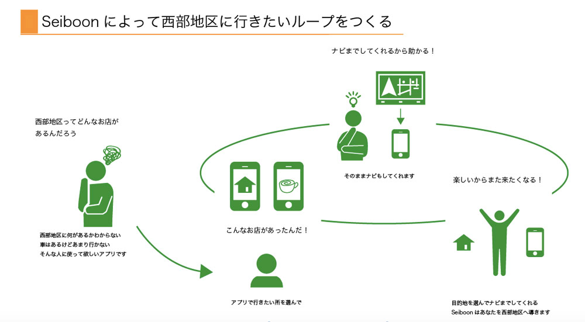
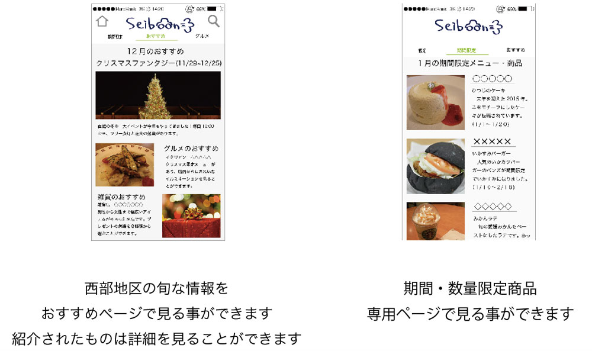
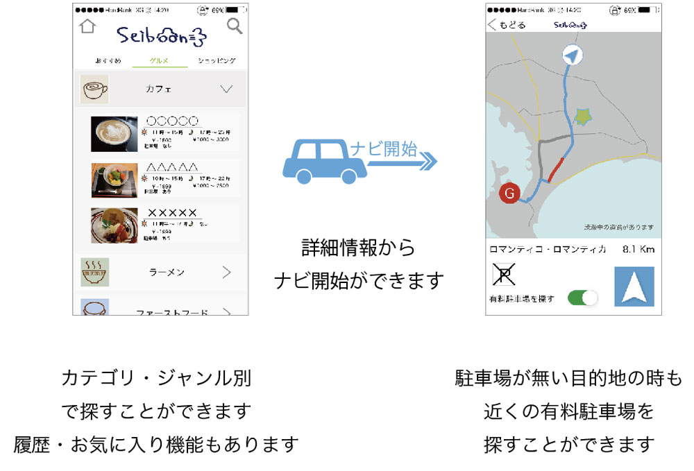

- 
- 
- 
Mobility
Seiboon
二年前期の情報表現基礎Ⅲで初めて行ったフィールドワーク。これは西部地区のフィールドワークから得られた情報を元にaiで作成した西部地区への交通を助けるアプリです。具体的には西部地区へ足を運ばない人が増えてきているというテーマで、私たちはその理由の一つとして”また来たいと思わないコンテンツがない！”と考え、ナビゲーションシステムと西部地区のグルメ情報にに特化したアプリを作成し、また来たいと思わせるループを作ろうと試みました。初めてのフィールドワークで多くの失敗があったけれど、やはり実際にその場所に足を踏み入れる事がどれだけ重要かわかりました。
| 期間 | 2014.11 - 2015.5 |
|---|---|
| アプリ | Illustrator |